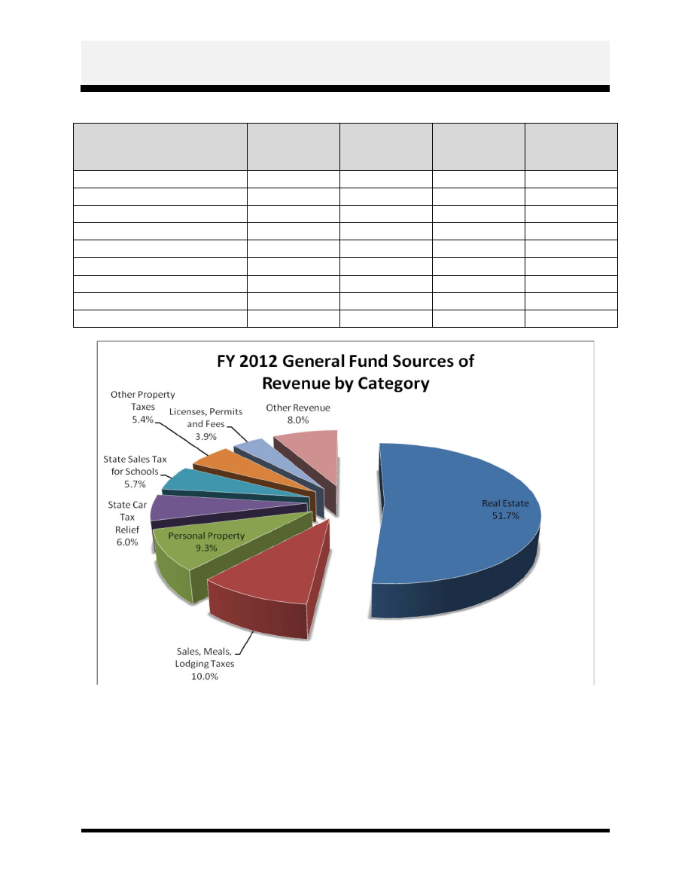
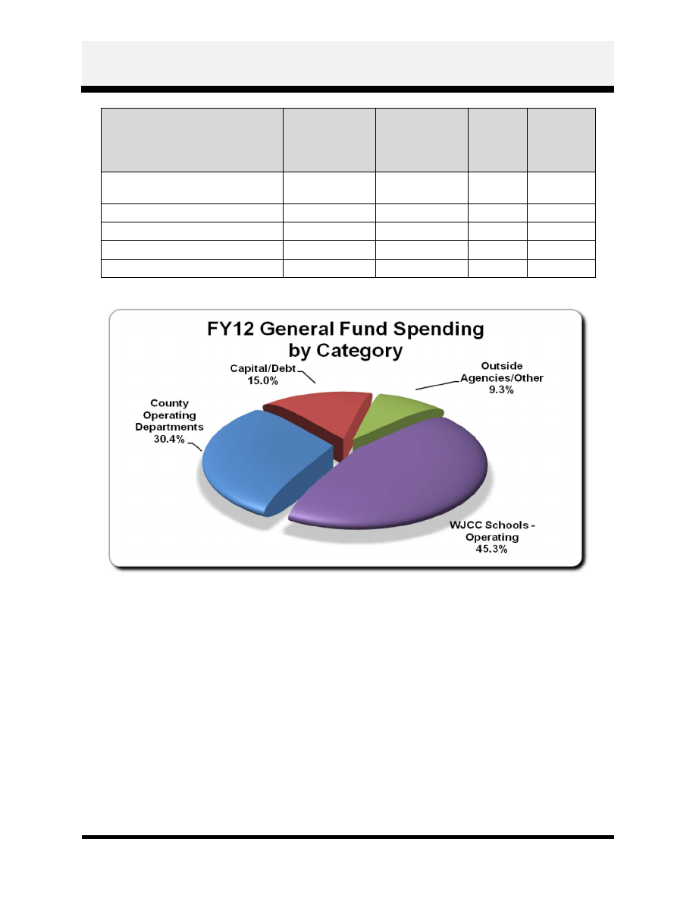
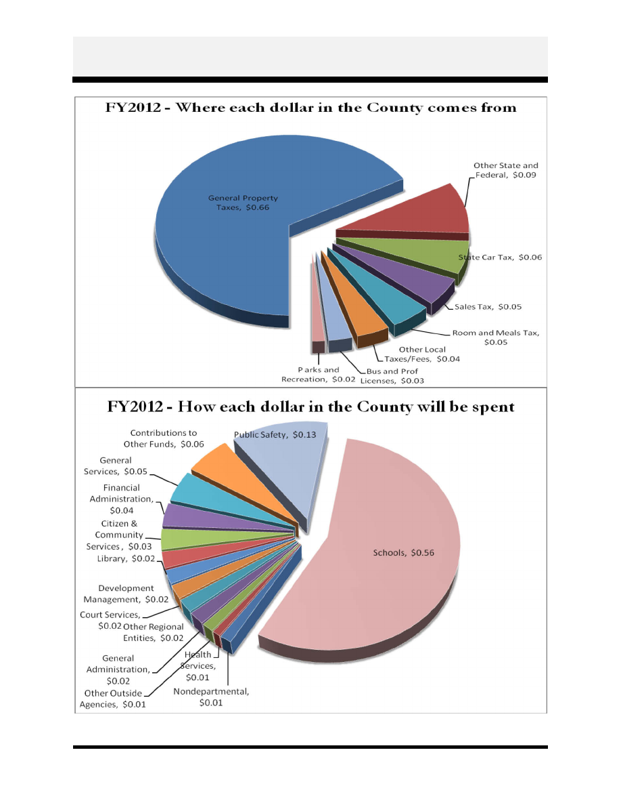

County Administrator's Budget Message
Page A-1
To: The Members of the Board of Supervisors
In this document I present to you and the citizens of James City County the proposed budget for
the Fiscal Year 2012 beginning July 1, 2011 (FY 2012). This is a restrained budget that attempts
to reallocate resources to meet community needs and avoid adding annual recurring
expenditures. Even though some revenues and economic indicators are beginning to increase,
this budget is prepared with a view to the next biennium (FY 2013-2014) and challenges that are
anticipated.
This budget restraint could be described by what is not included for FY 2012.
There are no changes in tax rates and no changes in fees.
There is no overall pay increase for County employees.
There is no increase in the number of County employees.
There is no general reassessment of real property.
This budget proposal includes a reallocation of internal resources that I have implemented in FY
2011 and includes moving positions to target areas in the County’s organization, like economic
development and zoning enforcement, where I believe they can be used to significantly enhance
those programs.
This year we revisited the County’s Strategic Plan, the common foundation that guides our work.
I have worked with staff and the Board on a revised vision and we reaffirmed the County’s
mission and established a new set of values. The budget document is slightly different in
appearance this year in anticipation of a revised strategic plan and as we transition to a budget
with a higher focus on outcomes. This budget presents for each operating department a more full
explanation of the key services provided. As the County’s Strategic Plan is developed the
department outcomes will align with the broader goals in the plan.
The FY 2012 budget increases $3.1 million from the adopted fiscal plan, an increase of 1.9
percent, and $3.3 million or 2.0 percent from the FY 2011 adopted budget. After three years of
declining budgets it would be tempting to use the increase in projected revenues to add to
recurring spending. Several priorities such as compensation increases or additional staff or
expanded contributions to the several regional agencies we participate in could be addressed.
However, looking ahead to FY 2013 and FY 2014, this budget had to avoid the addition of
recurring costs, if at all possible.
A portion of the increase in funding in FY 2012 has been driven by the same kind of spending
increases that affect the average citizen – increases in fuel costs, health insurance, equipment
maintenance and impacts of increasing rates for electricity. The rest of the revenue increase is
directed to one-time spending. Examples are capital projects, a watershed study, voter
redistricting, increasing the contribution to the debt service reserve fund and in creating zoning
ordinance amendments to implement the recently amended 2010 Comprehensive Plan.

County Administrator's Budget Message
Page A-2
This budget also proposes an increase in County funding beyond that in the adopted fiscal plan to
the Williamsburg-James City County (WJCC) public schools. Maintaining a high-quality high-
performing educational system for K-12 and pre-kindergarten programs is a priority that both the
Board and the community have insisted is essential.
Targeted capital maintenance helps to retain and improve the value of prior public investments,
including our public schools.
Economic Conditions as a Backdrop
A budget proposal of $164 million for FY 2012 needs to be considered in the context of the
economic challenges experienced by the County and its residents over the past several years.
Four years ago the FY 2008 adopted County budget was $175 million and the past three budget
cycles have focused on spending less money while minimizing the impact on public services.
Over 64 regular County positions have been eliminated, almost all by attrition. Local funding
for WJCC Schools has been least impacted, with a slight increase, but two new schools were
added in FY 2008 (Warhill High and Matoaka Elementary Schools) and two additional new
schools since (Hornsby Middle and Blayton Elementary Schools in September 2010).
Even as budgets and personnel costs have been reduced, the need for services to citizens in most
County offices is increasing. Both the economy and the County’s increasing population have
increased workloads in most departments.
The County’s residential population has grown from an estimated 61,700 in FY 2008 to over
67,000 according to the recent 2010 census. James City County was the fifth fastest growing
Virginia locality since the 2000 census. The economy has created added workload in Social
Services, the courts, and in law enforcement. The combination of reductions in the workforce

County Administrator's Budget Message
Page A-3
and increases in workload has added stress to existing County staff who continue to provide high
quality services. This stress might be acceptable for a specific period of time but it cannot
continue indefinitely. Over the next several years, service expectations need to be reduced or
additional positions need to be added.
With County spending on the decline and a fast growing population, it is no surprise that per-
capita spending in the FY 2012 budget, adjusted for inflation, is lower than it has been in the past
decade.

County Administrator's Budget Message
Page A-4
GENERAL FUND
Revenues
The increase in the projected property tax revenue accounts for $2.7 million of the $3.3 million
revenue increase in FY 2012. There is no reassessment in FY 2012 nor is a tax rate increase
proposed so the increase in real property tax revenues comes entirely from new development.
New construction still continues as property owners invest in developing both residential and
commercial projects. The FY 2012 budget projects an estimated 28 percent increase in building
permit fee revenue as both residential and non-residential construction begins a modest upward
curve. Personal property taxes also reflect the impact of the County’s population growth and
new vehicles have been added to the tax roles. Machinery and tools tax revenues also have
increased as County manufacturers, led by Owens-Brockway, have invested in expansions and
new equipment.
Consumer spending, as reflected in sales, meals and lodging taxes paid by both residents and
visitors, remains relatively flat. Revenues from fees and charges for services are expected to
decline overall as budget-conscious consumers are reducing discretionary spending for services
like the before- and after-school recreation programs and memberships at the Community
Center.
State revenues decline slightly, except for the pass-through of the one-penny sales tax for
education. The State Sales Tax for Education is one penny of the State wide five-cent sales tax
distributed to the localities in proportion to the number of school age children and the increase
for the County represents both the growth in retail sales Statewide and a higher census of school-
age children.

County Administrator's Budget Message
Page A-5
FY 2011
Adopted
FY 2012
Proposed
Share of
FY 2012
Budget
% Change
from FY 2011
Real Estate
$ 83,302,075 $ 84,786,304
51.7%
1.8%
Sales, Meals, Lodging Taxes
$ 16,375,000 $ 16,400,000
10.0%
0.2%
Personal Property
$ 14,590,859 $ 15,331,816
9.3%
5.1%
State Car Tax Relief
$ 9,770,137 $ 9,770,137
6.0%
0.0%
State Sales Tax for Schools
$ 8,900,000 $ 9,350,000
5.7%
5.1%
Other Property Taxes
$ 8,312,500 $ 8,797,500
5.4%
5.8%
Licenses, Permits and Fees
$ 6,241,250 $ 6,377,000
3.9%
2.2%
Other Revenue
$ 13,225,400 $ 13,187,243
8.0%
(0.3%)
$160,717,221 $164,000,000
100.0%
2.0%

County Administrator's Budget Message
Page A-6
Personnel and Compensation
Costs for full time salaries increase by an insignificant amount from FY 2011. There is no
general pay raise. Included in these increased costs are salary adjustments for employees who
complete the requirements to advance along a career ladder, such as Police Officer to Senior
Police Officer, and adjustments to fewer than 10 positions which have changed significantly or
are significantly behind the market. $48,000 is set aside for annual Line of Duty Act (LODA)
payments recently adopted as an unfunded mandate by the State. The program already exists and
is designed to help first responders and their families in the event of a catastrophe. The recent
State budget challenges, however, have resulted in a shift of program costs from the State to
local governments.
Overtime policies
1
for Police and Fire employees are being changed so that paid time off will
count towards time worked in calculating overtime. This has an additional estimated annual cost
of $80,000 and is being recommended to retain and recruit these employees in an environment
where most other localities in the Hampton Roads region already have enacted this provision.
Virginia Retirement System (VRS)
2
payments continue to be budgeted and paid based on the
contribution rate adopted by the VRS Board of Trustees. The County has the ability to require
employees hired after July 1, 2010, unless they were already covered by VRS through a former
employer, to pay the employee share of VRS. These employees are designated as Plan 2
employees of which half are new hires in public safety (police and fire). A legislative proposal
to allow the County to require all employees to pay 5 percent of their salaries towards VRS was
not passed by the General Assembly. For reasons of competitiveness and equity among
employees, this budget does not recommend that Plan 2 employees pay the employee share.
Newly-hired firefighters and police officers experiencing a 5 percent reduction in pay would be
especially vulnerable to being hired away by other localities after we have invested heavily in
their training. When the legislation passes that would allow the County to consider having every
County employee pay into VRS, then it will be my recommendation that the County enact that
change, with a corresponding raise.
The budget proposal includes previously realigned and existing positions moved to other
responsibilities:
A position vacated by retirement in Real Estate Assessments has been re-designated as a
programmer analyst in Information Resources Management and will provide tools and
services to help improve productivity;
An existing Fire Department employee, whose major responsibilities have focused on fire
safety and citizen education programs, has been moved within the Fire Department to
Emergency Management;
1
Please see addendum on pages A-16 for changes from the proposed budget to adopted budget.
2
Please see addendum on pages A-16 for changes from the proposed budget to adopted budget.
County Administrator's Budget Message
Page A-7
A Senior Planner has been assigned the responsibilities of a Business Development and
Retention Coordinator within the Office of Economic Development to expand the
County’s efforts in these areas;
A Development Management Assistant has been assigned the responsibilities of a Zoning
Officer in a newly separated Zoning Enforcement Division to allow the County to
respond to complaints more quickly and to be proactive in addressing issues before they
become problems;
A vacant position in Financial and Management Services has been re-designated as a
Buyer in Purchasing to provide the staffing necessary to reap the potential savings from
this shared service with the Schools;
An Inclusion Coordinator in Parks and Recreation has been added to coordinate services
to disabled children and to assist in meeting licensing requirements in several recreation
programs, including before- and after-school and summer recreation camps. This position
was reallocated from the Treasurer’s Office, which has opted for a part-time position.
Several positions are being moved from the Stormwater Division to other departments
and divisions. A Senior Civil Engineer is being moved from the General Service’s
Stormwater Division to Development Management’s Engineering and Site Development
Division, which was previously named the Environmental Division.
3
The County
Engineer, previously in Stormwater, and a Stormwater Inspector position have been
moved from Stormwater to Capital Projects within General Services. These
reassignments are designed to clarify the lines of business by assigning all duties to
Development Management while a private project is under development or construction
in the County. Construction and maintenance of County projects and infrastructure will
remain the responsibility of General Services. Duties for dam safety inspections and
floodplain and watershed management studies become the responsibilities of the Division
of Engineering and Site Development. While no positions are being transferred, the
Code Compliance Division has been renamed as the Division for Building Safety and
Permits.
Health insurance renewals have resulted in an average 4.3 percent increase for the three plans
now offered County employees. Health insurance costs are, and will continue to be, shared
between the County and the employees. Other employer costs for employees, such as worker’s
compensation and unemployment, have actually declined.
Compensation for temporary positions is the only compensation area showing an increase in FY
2012 and directly relates to election officers. The County’s population increase as reported by
the 2010 Federal Census will require the redistricting of local, State and Congressional voting
districts. Primaries originally scheduled this fiscal year will be pushed into the next – four
general and primary elections are projected in FY 2012 – and additional precincts will be added
for a growing number of registered voters.
As previously stated in this message – there are no new positions and budgeted salaries increase
by 1 percent in FY 2012. All changes and reallocations have been made with little impact on the
3
Please see addendum on pages A-16 for changes from the proposed budget to adopted budget.

County Administrator's Budget Message
Page A-8
total personnel budget for County operations. There are 8.09 full-time General Fund positions
per 1,000 residents in the FY 2012 budget, a significant reduction from the 9.96 positions per
1,000 in FY 2008.
*Population data obtained from Population Estimates provided by Weldon Cooper Center for Public Service as
updated on Feburary 14, 2011 for 2008-2009, 2010 Census, and the James City County Planning Divison for 2011-
2012.
Non Personnel-Related County Operating Expenditures
The County has been aggressively pursuing energy savings – retrofits to doors and windows,
replacing HVAC elements, creating more user awareness of costs, modernizing servers, printers
and appliances and is investing in alternative energies such as geo-thermal and/or alternative-
fueled automobiles. Projected increases in fuel costs and Dominion Virginia Power rate
increases certainly justify the County’s past initiatives in saving energy but they result in reduced
savings, and in some cases increased costs, in basic utility operations.
Increased costs for leases and maintenance of emergency communications systems and the
County’s fiber network are included in the FY 2012 budget, as are the costs of opening three new
public facilities – the new police building, the Freedom Park interpretive center, and a new Fire
Administration and Training facility (an expansion and renovation of the current Law
Enforcement Center) – although all are being opened with no increase in current staff. Postage
costs increase due to the timing of several large mailings to County residents, including new
voter registration cards in the summer of 2011 and changes in property reassessment notices in
March 2012.

County Administrator's Budget Message
Page A-9
FY 2011
Adopted
FY 2012
Proposed
Share
of
FY12
Budget
%
Change
from
FY11
County Operating
Departments
$ 48,630,199 $ 49,935,562
30.4%
2.7%
Capital/Debt
$ 23,800,000 $ 24,643,000
15.0%
3.5%
Outside Agencies/Other
$ 14,487,022 $ 15,171,438
9.3%
4.7%
WJCC Schools - Operating
$ 73,800,000 $ 74,250,000
45.3%
0.6%
$160,717,221 $164,000,000 100.0%
2.0%
Education
This budget includes an additional $450,000 contribution of County funds to the operations of
the Williamsburg-James City County Schools, an increase from both FY 2011 and from what
had been planned for the Schools in FY 2012. This recommendation does not fully fund the
Schools Board’s request, however, it falls $525,000 short of that figure. The County’s
investment focuses on a “budget of need” for school operations, even if it does not fully fund a
proposed contingency, represented by a request for a number of budgeted positions that are held
in “reserve”. If circumstances and enrollment changes in FY 2012 reach the point that additional
teaching positions are needed and cannot be funded any other way, I will recommend a
supplemental appropriation in mid-year.
State revenue reductions and the end of Federal stimulus money has created a challenging budget
environment for WJCC and has resulted in increases in the School Board’s funding requests to
both the City of Williamsburg and the County. The County’s funding does not quite fully fund

County Administrator's Budget Message
Page A-10
the School Board’s funding request for the operating budget but does provide $74,250,000 or
99.3% of what was requested. Both the County and the School Board must look ahead to the
next biennium and the reduction in property tax revenues resulting from a general reassessment
of real property in the County.
Outside Agencies
Funding requests from outside agencies are always critically reviewed by a variety of staff and
community groups and while the FY 2012 budget recommends funding at the level identified in
the adopted fiscal plan for most of the agencies, a few will see reduced levels of funding and a
few will receive no funding at all.
Community Service Agencies
4
like Avalon and the Community Action Agency that provide
safety net services for the County’s neediest citizens are funded in accordance with the fiscal
plan. One exception is the Historic Triangle Senior Center (HTSC), whose funding would be re-
designated in some form to refocus services on low-income seniors or those at-risk. The funding
was originally approved with that target group in mind but the population served by the Center
has shifted. Funding to the HTSC for its programmed activities has been eliminated. The
current funding recommendation is focused exclusively on the RIDES program offering
transportation for seniors to medical appointments.
Funding has also been eliminated for the Peninsula YMCA where contributions to a capital
campaign have been made to allow use of the pool on Mooretown Road by WJCC high school
swim teams. The pool has not been used by the teams for practice or competition so the final
installment of $50,000 in FY 2012 has been eliminated.
A contribution to Big Brothers/Big Sisters (BB/BS) has been eliminated but the Department of
Social Services has added funds to contract with BB/BS for mentoring services to children at-
risk.
Business and Regional Associations
5
are important partners in a variety of ways but in
evaluating what the citizens of James City County actually receive in services, these funding
levels have been adjusted. Funding allocations to the Crossroads Group, the Peninsula Chamber
of Commerce, the Regional Air Service Enhancement Fund (the County’s Economic
Development Authority funds this as well) and to those advocating for Virginia High Speed Rail
have been eliminated. Reductions have been made in the funding requested by the Military and
Federal Facilities Alliance and the Hampton Roads Partnership. One new funding allocation has
been allotted to the NASA Aeronautics Support Team for their green aviation lobbying
initiatives.
Educational and Environmental agency requests have not been fully funded, including a
request for site improvements at the Hampton campus of Thomas Nelson Community College.
The request of the Colonial Soil and Water Conservation District (CSWCD) is not funded
4
Please see addendum on pages A-16 for changes from the proposed budget to adopted budget.
5
Please see addendum on pages A-16 for changes from the proposed budget to adopted budget.

County Administrator's Budget Message
Page A-11
through a general contribution of County funds. Departmental funding, however, is in place to
contract with the CSWCD for specific services relating to services connected with the County’s
water quality initiatives.
Public Safety Agency budget requests continue to be funded. With the County assuming
responsibility for motor fuels and vehicle and equipment maintenance and with the recent
approval of a new mechanic in the County’s Fleet Maintenance function, the James City-Bruton
Volunteer Fire Department (JCBVFD) budget request is fully funded, as is a requested
contribution to the JCBVFD capital campaign.
The Health Services and Regional Entities category includes agencies that receive relatively
significant levels of County funding, such as Olde Towne Medical Center, Williamsburg
Regional Library (WRL), Virginia Peninsula Regional Jail, Merrimac Center, Colonial
Behavioral Health and the Peninsula Public Health Department. As a group these agencies are
essentially flat funded, with reductions in funding to WRL offset by modest increases to agencies
such as the Virginia Peninsula Regional Jail and the Group Home Commission.
One exception is the County’s contribution to the Public Health Department where the General
Assembly reduced fees for State Health Department inspections of restaurants and passed a
portion of the funding on to the localities. This resulted in a 10.5 percent increase in County
funding of $34,492.
Tourism Agency Funding comes from two sources, 60% of the revenues collected by the
County’s 5% lodging tax (estimated at $1,080,000) and 100% of a special assessment of $2 per
lodging night (estimated at $700,000 and directed by law to the Williamsburg Area Destination
Marketing Committee). The lodging tax proceeds have usually been split between a marketing
contribution to the Greater Williamsburg Chamber and Tourism Alliance (Alliance) and venues
or events such as Jamestown-Yorktown Foundation and Historic Jamestowne.
As the locality with the fewest hotel rooms in the Historic Triangle, James City County is
making the largest contribution to the Alliance for tourism marketing. In FY 2012 the
contribution to the Alliance is being reduced to provide a similar contribution as the City. The
reduction in funding from the current $875,000 to a level that matches the City contribution of
$650,000 may be the first year of a multi-year program to equalize contributions to the Alliance
on a “per hotel room” basis. The County contribution, even at this reduced level in FY 2012, is
still larger than York’s, and James City County has fewer hotel rooms. Funding is not
recommended for a request for funds received from the Hotel/Motel Association.
In FY 2012 a portion of the lodging tax proceeds ($280,000) will be invested in a Tourism
Investment Fund for County-specific projects, venues, and special events.
Funds in the amount of $500,000 will be transferred from the County General Fund to the
Special Projects Fund - $200,000 to be administered by the Engineering and Site Development
Division for a watershed study of the York River tributaries, $250,000 for neighborhood storm
drainage and stream restoration projects, and $50,000 for a pilot program to invest in property
improvements that minimize the impacts of localized flooding. These projects might include

County Administrator's Budget Message
Page A-12
raising heat pump units or landscaping improvements to divert flood waters from entering into
homes.
CAPITAL PROJECTS FUND
The Capital Projects Fund includes both a one-year FY 2012 Capital Budget and a six-year
Capital Improvement Plan. The Capital Budget for FY 2012 totals $8,698,000 with a majority
of the spending on three projects – a rebuilt and expanded Fire Station #4 on Olde Towne Road,
improvements and replacements for facilities (including Kidsburg) at Mid County Park, and the
renovation and reallocation of space at Building D in the Government Center. The Mid County
Park project would also light baseball fields at Jamestown High School which will replace fields
that will be eliminated in the master plan changes at Mid County. The rest of the Capital Budget
consists of smaller capital maintenance projects requested by either the Schools or General
Services. A replacement ambulance is also included.
The FY 2012 Capital Budget does not have many school projects. Funds that already exist, in the
form of residual appropriations for the construction of Hornsby Middle and Blayton Elementary
Schools, will be used for a variety of projects over the next year. These projects include an
expansion of Jamestown High School with a multi-use gymnasium facility, structural repairs to
Lafayette High School, a refurbishment, both interior and exterior, for DJ Montague Elementary
School, including a new geo-thermal HVAC system, and temporary mobile
classroom additions
at Hornsby and Berkeley Middle Schools.
The Capital Improvement Plan focuses on maintenance projects over the next six years. The
only significant new capital investments are projected in FY 2017 when a new school
administration building is planned for construction and James Blair converts back into a middle
school. There are a number of potential new investments that the Board has previously adopted
through master plans - including future phases of the Warhill Sports Complex, a community
gymnasium, and Shaping our Shores investments at Chickahominy Riverfront Park, Jamestown
Campground and the Jamestown Marina. There is no significant investment over the next six
years to implement these plans. Very little is included for water quality projects to meet new
Federal and State stormwater requirements, including those recently announced for the
Chesapeake Bay. When additional information is available and the County develops a formal
strategic approach to these investments, the Capital Improvement Plan will need to be amended.
OTHER FUNDS
The County operates separate funds for those public services that do not depend on local tax
money – the major revenue sources are Federal and State or user fees for specific services, like
water and wastewater.
The Department of Social Services (DSS) continues to provide a safety net for basic
community services to County residents and with the recent economic conditions, the number of
clients has expanded significantly. Non-local funding has been used to convert one part-time
position to full-time with an accompanying reduction in temporary hours. The County’s
contribution to DSS increases in FY 2012 by 1.1 percent to fund an increase in the County share

County Administrator's Budget Message
Page A-13
of increased costs for child care and child mentoring under a contract with Big Brothers and Big
Sisters (BB/BS). This increase is partially offset by a reallocation of monies previously
contributed to BB/BS.
Special Projects is the fund used to account for one-time non-capital projects, grant-funded
projects or major program spending like the Comprehensive Services Act (CSA). Grant matches
for the CSA and the Virginia Department of Transportation revenue sharing program are shown
in Special Projects, as is the investment in the York tributaries watershed master plan.
Housing and Community Development is actively involved in Community Development
Block Grant programs in low-income areas and provides housing assistance under Federal
programs such as Section 8. The County’s contribution towards housing programs declines by
1.1 percent.
Colonial Community Corrections operates community-based probation and pre-trial services
for six localities. The County’s contribution in FY 2012 is the same as the amount contributed in
FY 2011.
A Tourism Investment Fund is being created in FY 2012 with an initial $280,000 in room tax
proceeds. The purpose of the fund is to make investments in venues, sponsor special events, and
develop beautification projects, regional marketing initiatives, and other programs and projects
that would work to attract visitors to the County.
JAMES CITY SERVICE AUTHORITY
The James City Service Authority (JCSA) acts as the County’s water and sewer utility and
provides these services in parts of the County. The JCSA is financed entirely by user fees and
receives no tax money from James City County. Beyond the normal operations of a utility, the
JCSA capital budget targets additional engineering and construction costs related to requirements
of the Federal Environmental Protection Agency and State Department of Environmental Quality
for mandated sewer system improvements. These mandated services, under a consent order,
cover all of Hampton Roads and impact every community.
The FY 2012 Operating Budget for the JCSA increases 1.6 percent from the adopted FY 2011
budget, an increase funded by new customers, both water and sewer. Spending is primarily
focused on maintenance, although two of the three full-time positions proposed are to develop
and support a Fats, Oils and Grease (FOG) program to allow for inspections and education of
those operating commercial kitchens to reduce the incidence of clogged sewer pipes and, as a
result, reduce the incidence of spills and breakage. The FOG program is one initiative that is in
response to the consent order, yet another unfunded mandate, created by the Federal
Environmental Protection Agency and the State Department of Environmental Quality.
In the FY 2012 JCSA Capital Budget, funded by facility charges provided by new connections, a
replacement service vehicle and $100,000 in match money for the improvement of Tewning
Road are the only Capital Budget items that do not target the sewer system improvements
mandated by the consent order.

County Administrator's Budget Message
Page A-14
DEBT SERVICE AND YEAR END BALANCES
The contribution to Debt Service in FY 2012 has increased by $1,065,000; however, this is not
because the County has incurred additional indebtedness. In FY 2011 and FY 2012, the County
will have retired $29 million in outstanding debt and is planning to issue only $1 million to
partially fund the Jamestown High School multi-use space. The increase is intended to add funds
to the Debt Service Reserve and bank the funds for the upcoming two-year budget cycle, FY
2013 and FY 2014.
A similar proposal will be made for the expected FY 2011 revenue surplus of approximately $1.6
million. When that figure is finalized, as part of the FY 2011 audit, I will recommend that it be
contributed to the debt service reserve for use in addressing the budget challenges in the coming
two years.
SUMMARY
The FY 2012 budget, as submitted, is a maintenance budget – it attempts to maintain the
extraordinary quality of life in James City County; maintain programs and services; maintain
community facilities and regional partnerships and maintain the current taxes and fees that
County residents pay for these services. There are some modifications designed to improve a
number of County services and programs, but most have been proposed by re-directing currently
existing funds and staff. Education is and has been a high priority and increased funding to the
Williamsburg-James City County Schools is included in this budget.
The following fiscal year, FY 2013, will continue a period of challenging fiscal environments for
the County.
The County will see a general reassessment of real property values and both residential
and commercial values may drop by an estimated 3 to 5 percent.
Efforts by the Federal government to reduce the annual spending deficit are expected to
reduce funding for many County programs, among them Schools, Social Services and
Community Development.
Higher gasoline prices will both raise the costs of services like Police and Fire and could
negatively impact consumer spending (including local sales tax revenues) by both
residents and visitors.
Another round of mandated and unfunded, local service initiatives focusing on water
quality and stormwater is expected as the legislative efforts of the Federal and State
government solidify and are written and enforced as regulations.
The 2010 Census count identified over 67,000 County residents, a 39.3% increase from
the year 2000 count of 48,100, and workloads in County Departments have shown a
commensurate growth rate even as both spending and the number of employees have
declined over the past four years.
Inflationary pressures on commodities such as food, gasoline, energy and clothing are
creating additional pressure on people in the community, including County employees,
and pay increases cannot be deferred beyond FY 2012.

County Administrator's Budget Message
Page A-15
Despite, or perhaps as a result of, the challenges, James City County will continue to pursue
excellence in incremental steps. The County’s public infrastructure is well-maintained and its
programs are well-designed and mature. Employees are dedicated, professional and experienced
and County residents enjoy a superior local government as the costs per resident decline.
In my short tenure, it has been possible to identify a number of initiatives that will begin in FY
2011 and extend into FY 2012. A refocused and expanded economic development effort is being
launched. Opportunities for the community to be involved in County Government and to
communicate with County Government have started and will expand. The County will also
undertake a redrafting of its Strategic Plan and a system and process to assure that the Board’s
and community’s expectations are identified and prioritized in each future fiscal year. My staff
and I look forward to working with the Board of Supervisors to address these and other
opportunities to make this County the best County in which to live, work or visit.
Respectively submitted,
Robert C. Middaugh
County Administrator

County Administrator's Budget Message
Page A-16
Changes from the Proposed to Adopted FY 2012 Budget
• An increase of $1,000 to Contributions to Other Outside Agencies for Peninsula Chamber
of Commerce funding.
• An increase of $20,950 to Contributions to Other Outside Agencies for Historic Triangle
Senior Center funding.
• A net decrease in expenditures of $3,505 resulting from a reduction in funding for
proposed Senior Program funding and a correction made to the fringe benefits calculation
within the Parks and Recreation budget.
• A decrease in expenditures of $20,333 to reflect cost savings in rent expenses within the
Economic Development budget.
• An increase in expenditures of $13,000 to reflect extending the change in overtime policy
to all employees.
• A net decrease of $11,112 in Operating Contingency resulting from funding provided for
Peninsula Chamber of Commerce funding, extending the new overtime policy to all
employees, and correcting the fringe benefits calculation for Parks and Recreation.
• The Board of Supervisors agreed that VRS Plan 2 employees will pay the employee share
of VRS effective July 1, 2011, and will approve a 5.7 percent increase in salary for Plan 2
employees hired by June 30, 2011 in order to maintain take home pay for those
employees. The Board also agreed to allow an entry level salary that is up to 5.7 percent
above the current beginning salary for Plan 2 Police and Fire recruits.
• The proposed name change for the Environmental Division was changed from
Engineering and Site Development to Engineering and Resource Protection.

County Administrator's Budget Message
Page A-17
Document Outline
- To: The Members of the Board of Supervisors
- In this document I present to you and the citizens of James City County the proposed budget for the Fiscal Year 2012 beginning July 1, 2011 (FY 2012). This is a restrained budget that attempts to reallocate resources to meet community needs and avoid ...
- This budget restraint could be described by what is not included for FY 2012.
- There are no changes in tax rates and no changes in fees.
- There is no overall pay increase for County employees.
- There is no increase in the number of County employees.
- There is no general reassessment of real property.
- This budget proposal includes a reallocation of internal resources that I have implemented in FY 2011 and includes moving positions to target areas in the County’s organization, like economic development and zoning enforcement, where I believe they ca...
- Targeted capital maintenance helps to retain and improve the value of prior public investments, including our public schools.
- Economic Conditions as a Backdrop
- A budget proposal of $164 million for FY 2012 needs to be considered in the context of the economic challenges experienced by the County and its residents over the past several years. Four years ago the FY 2008 adopted County budget was $175 million a...
- Over 64 regular County positions have been eliminated, almost all by attrition. Local funding for WJCC Schools has been least impacted, with a slight increase, but two new schools were added in FY 2008 (Warhill High and Matoaka Elementary Schools) an...
- With County spending on the decline and a fast growing population, it is no surprise that per-capita spending in the FY 2012 budget, adjusted for inflation, is lower than it has been in the past decade.
- GENERAL FUND
- Revenues
- The increase in the projected property tax revenue accounts for $2.7 million of the $3.3 million revenue increase in FY 2012. There is no reassessment in FY 2012 nor is a tax rate increase proposed so the increase in real property tax revenues comes ...
- Consumer spending, as reflected in sales, meals and lodging taxes paid by both residents and visitors, remains relatively flat. Revenues from fees and charges for services are expected to decline overall as budget-conscious consumers are reducing disc...
- Personnel and Compensation